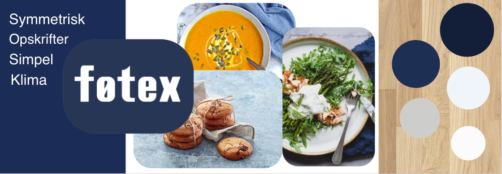

Flow 4 - SoMe Videoproduktion
I vores flow 4 har vi haft om videoredigering i PremierPro. Vi har haft fokus på dette men også på at lave responsive sider med bootstrap som kan anvendes på både telefon og web.
Fokuspunkter
- Video og virkemidler
- Bootstrap
Programmer anvendt
- Illustrator
- Premiere Pro
Opgave Flow 4.6 - Videoproduktion & Landingpage
Opgavebeskrivelse
I flow 4 havde vi til opgave at lave et sæt videoer til at promovere et produkt eller en service til en eksisterende virksomhed. Den skulle designes til en SoMe platform og have en landingpage som beskriver produktet og virksomheden. Hent den fulde opgavebeskrivelse nedenfor.
Konceptudvikling
Vi valgte Føtex som vores virksomhed, og har valgt at fokusere på deres opskrifter som man kan læse på deres hjemmeside.
I forhold til konceptudvikling har vi gjort brug af brainstorming, skitser, storyboards og styleguide.
Styleguide
Til vores styleguide har vi brugt Føtex' farvepallette som primært består af blå, hvid og grå.Desuden har vi brugt billeder af mad fra deres hjemmeside og en træ baggrund som skulle symbolisere det bord som vi har filmet vores video på.
Nedenfor kan du se vores styleguide hvor at vi viser hvilke farver og den overordnede stemning.

Logo
Vi har også lavet vores eget logo i illustrator, da dette var et af kravene til opgaven.
Vi har brugt Føtex' eget logo og givet det twist, så det stadig var tro til virksomheden.
Jeg har vedhæftet vores powerpoint til opgaven hvor at der er mere om vores konceptudvikling.
SoMe Video
Vi skulle lave tre videoer til at reklamere for vores produkt, hver med forskellige længder.
En lang video: 30 sekunder. En kort video: 15 sekunder. En ultrakort video: 5 sekunderr.
Nedenfor kan du se den lange version af vores video, men jeg har også linket til den korte og ultra korte.
Landingpage
Til sidst skulle vi lave en landingpage til vores video, altså den side hvor man kan læse mere om produktet.
Vores fokus var at lave en informativ side men også en som var responsiv, så man kunne se den på alle platforme, da SoMe ofte foregår på telefonen.
Nedenfor kan du se vores landingpage men jeg har også indsat linket længere nede så man kan se den responsive del.